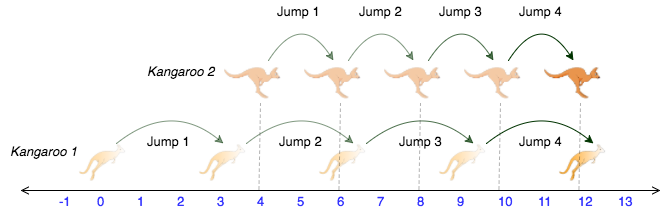

Problem You are choreographing a circus show with various animals. For one act, you are given two kangaroos on a number line ready to jump in the positive direction (i.e, toward positive infinity). -The first kangaroo starts at location x1 and moves at a rate of v1 meters per jump. -The second kangaroo starts at location x2 and moves at a rate of v2 meters per jump. You have to figure out a way to get both kangaroos at the same location at the same time as part of the show. If it is possible, return YES, otherwise return NO. For example, kangaroo 1 starts at x1=2 with a jump distance v1 = 1 and kangaroo 2 starts at x2=1 with a jump distance of v2=2. After one jump, they are both at x = 3, (x1 + v1 = 2, x2 + v2=1+2), so our answer is YES.
Function Description
Complete the function kangaroo in the editor below. It should return YES if they reach the same position at the same time, or NO if they don't. kangaroo has the following parameter(s): x1, v1: integers, starting position and jump distance for kangaroo 1 x2, v2: integers, starting position and jump distance for kangaroo 2Input Format
A single line of four space-separated integers denoting the respective values of x1,v1,x2,andv2.Constraints
- 0<=x2<=10000
- 1<=v1<=10000
- 1<=v2<=10000
Output Format
Print YES if they can land on the same location at the same time; otherwise, print NO. Note: The two kangaroos must land at the same location after making the same number of jumps. Sample Input 0 0 3 4 2 Sample Output 0 YES Explanation 0 The two kangaroos jump through the following sequence of locations:  From the image, it is clear that the kangaroos meet at the same location (number 12 on the number line) after same number of jumps (4 jumps), and we print YES. Sample Input 1 0 2 5 3 Sample Output 1 NO Explanation 1 The second kangaroo has a starting location that is ahead (further to the right) of the first kangaroo's starting location (i.e.,x2>x1 ). Because the second kangaroo moves at a faster rate (meaning ) and is already ahead of the first kangaroo, the first kangaroo will never be able to catch up. Thus, we print NO.Solution of Above Problem using C++
#includeusing namespace std; string result(int x1,int v1,int x2,int v2); int main() { int x1,v1,x2,v2; cin>>x1>>v1>>x2>>v2; printf(result(x1,v1,x2,v2)); return 0; } string result(int x1,int v1,int x2,int v2) { int flag =0; if(v2>v1) { return "NO"; } for(int j= 0;j<10000;j++) { if((x1)==(x2)) flag =1; else x1=x1+v1; x2=x2+v2; } if(flag==1) { return "YES"; } else return "NO"; }